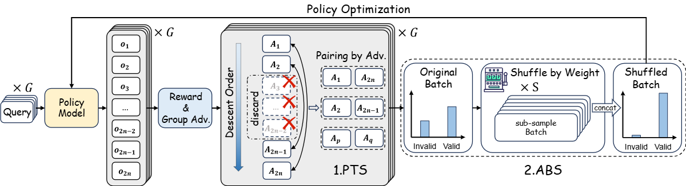
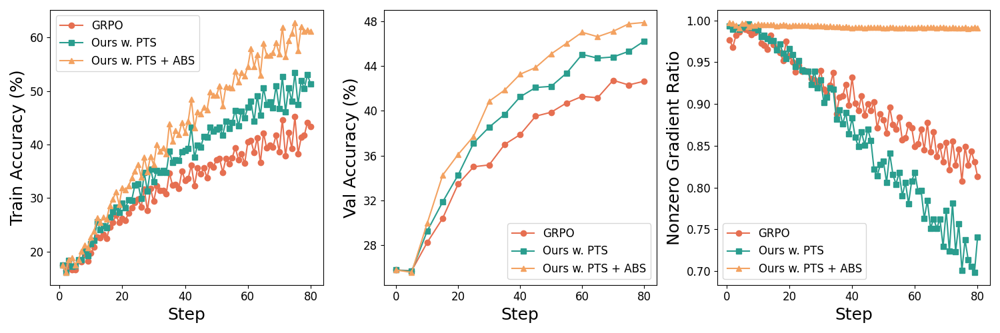

1Huazhong University of Science and Technology
2MiLM Plus, Xiaomi Inc.
Timeline:
[2026.01.26] Breaking news: Shuffle-R1 is accepted by ICLR 2026!
[2025.08.27] We have open source model checkpoints, training data, as well as training/inference/evaluation scripts! Check them out!
Reinforcement learning (RL) has emerged as an effective post-training paradigm for enhancing the reasoning capabilities of multimodal large language model (MLLM). However, current RL pipelines often suffer from training inefficiencies caused by two underexplored issues: Advantage Collapsing, where most advantages in a batch concentrate near zero, and Rollout Silencing, where the proportion of rollouts contributing non-zero gradients diminishes over time. These issues lead to suboptimal gradient updates and hinder long-term learning efficiency. To address these issues, we propose Shuffle-R1, a simple yet principled framework that improves RL fine-tuning efficiency by dynamically restructuring trajectory sampling and batch composition. It introduces (1) Pairwise Trajectory Sampling, which selects high-contrast trajectories with large advantages to improve gradient signal quality, and (2) Advantage-based Trajectory Shuffle, which increases exposure of valuable rollouts through informed batch reshuffling. Experiments across multiple reasoning benchmarks show that our framework consistently outperforms strong RL baselines with minimal overhead. These results highlight the importance of data-centric adaptations for more efficient RL training in MLLM.

The goal of PTS is to mitigate the Advantage Collapsing issue, where most trajectory advantages are close to zero, by organizing candidate trajectories into contrastive pairs to enhance the signal quality of high-advantage trajectories.
Without significantly increasing the computational cost, PTS selects pairs of tracks with strong contrast and rich gradient information from a larger exploration space to improve the effectiveness of policy gradients and improve data utilization.
To mitigate the Rollout Silencing issue, we introduce ABS, which reorders the training batch dynamically based on the advantages of the paired trajectories.
By introducing ABS, we transform the batch distribution to a "soft-prioritized" structure, maintaining diversity while exposing high-value samples multiple times, thus enhancing data utilization and mitigating Rollout Silencing.
Table 1: Performance of Shuffle-R1.
| Model | MathVerse | MathVision | MathVista(mini) | WeMath(loose) | HallusionBench | ChartQA | Average |
|---|---|---|---|---|---|---|---|
| Qwen2.5-VL-3B | 34.8 | 21.9 | 58.4 | 51.7 | 59.8 | 73.1 | 49.9 |
| Qwen2.5-VL-7B | 42.6 | 25.8 | 67.4 | 63.5 | 65.2 | 79.8 | 57.4 |
| Shuffle-R1-3B | 44.2 | 26.8 | 70.4 | 66.5 | 69.2 | 79.9 | 59.5 |
| Shuffle-R1-7B | 53.9 | 30.0 | 77.0 | 72.3 | 71.0 | 84.1 | 64.7 |
All models are evaluated under CoT prompt.

Left: Training accuracy of Shuffle-R1 compared with GRPO.
Middle: Validation accuracy of Shuffle-R1 compared with GRPO. Our framework achieves superior performance against GRPO with only half of the trainin steps.
Right: Rollouts ratio with nonzero gradient. Our framework maintains very high ratio throughout the training process, showing better data efficiency compared with GRPO.
Our work benefits from the following open-source projects:
@misc{zhu2025shuffler1,
title={Shuffle-R1: Efficient RL framework for Multimodal Large Language Models via Data-centric Dynamic Shuffle},
author={Linghao Zhu, Yiran Guan, Dingkang Liang, Jianzhong Ju, Zhenbo Luo, Bin Qin, Jian Luan, Yuliang Liu, Xiang Bai},
year={2025},
eprint={2508.05612},
archivePrefix={arXiv},
primaryClass={cs.LG},
url={https://arxiv.org/abs/2508.05612},
}